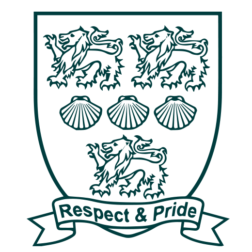

Sep 2021 – Jun 2024
University of Kent
BSc Business Information Technology · 2:2
Education
My education built a broad foundation across software, data, UX, cloud, and business—then challenged me to bring those areas together through practical projects.
Qualifications
Select any module below for a closer look at the topics, skills, and work involved.
Sep 2021 – Jun 2024
BSc Business Information Technology · 2:2

Sep 2014 – Jul 2021
A Levels and GCSEs
Eight GCSEs at grades 7–5, including English and Mathematics.
The bigger picture
Technology creates more value when it is designed with the organisation and its users in mind.
How applications, databases, interfaces, infrastructure, and code work together.
How business goals, customer needs, accessibility, and good management shape the solution.
How to turn a brief into a structured project, collaborate, test assumptions, and ship working outcomes.
My projects show how those modules became apps, systems, games, and creative digital work.